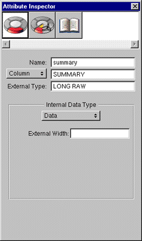
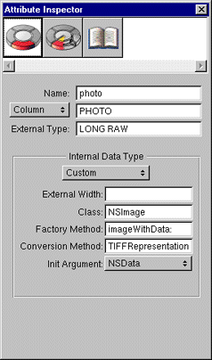
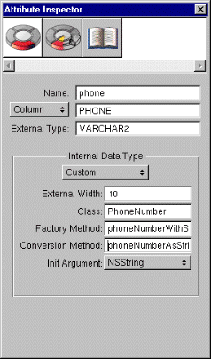

Table of Contents
Table of Contents  Next Section
Table of Contents
Next Section
Table of Contents  Previous Section
Previous Section
| Java | Objective-C |
|---|---|
| String | NSString |
| BigDecimal (java.math) | NSDecimalNumber |
| Number | NSNumber |
| NSGregorianDate | NSCalendarDate |
| NSData | NSData |
For example, in Oracle, VARCHAR columns are mapped to Strings, DATE columns are mapped to NSGregorianDates, and so on. The default mapping is appropriate for most data types, but you have to customize the mapping for attributes with special requirements.

Figure 21. Model Settings for an RTF Text Attribute
RTF Text
RTF text is one type of data that is commonly stored in NSDatas. In the database, store RTF data in a binary data type such as Oracle's LONG RAW; and in your enterprise object, store it in an NSData instance variable. EOModeler automatically maps binary data types to NSData, so the default mapping is correct for RTF attributes. Images
You can store image data in a binary data type (for example, LONG RAW in Oracle or image in Sybase) in the database. Alternatively, you can store the path name to an image file in the file system. This second approach is often times more practical for web applications.

Figure 22. Model Settings for an Image Attribute in an Application Kit Application
To display an image attribute in an Application Kit user interface, make an EOControlAssociation from an NSImageView object to your EODisplayGroup.
Enterprise Objects Framework maps attributes to a custom object using the same mechanism that it uses to map attributes to NSImages. In EOModeler's Attribute Inspector:
Binary data types such as Oracle's LONG RAW don't usually have width constraints. However, string columns such as VARCHARs often do have widths that you should enter.
This method should have one argument whose type matches the type specified in the Init Argument pop-up list.
This method should return an NSData object if the Init Argument type is NSData or Bytes, otherwise it should return an NSString.

Figure 23. Attribute Settings For a Custom Data Type
Note: You can also use a Java custom value class. If you do, set the Factory Method to a static method in your custom class that creates instances. Also, the Init Argument must be set to either NSData or NSString (which is mapped to java.lang.String); it can't be set to bytes.
Table of Contents Next Section